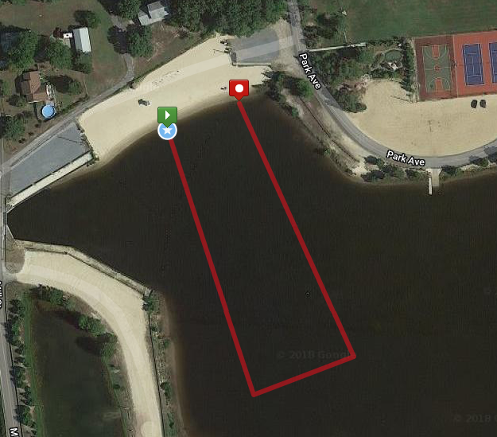
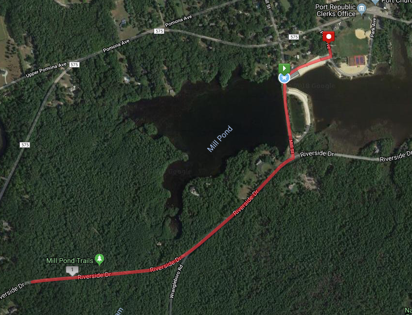
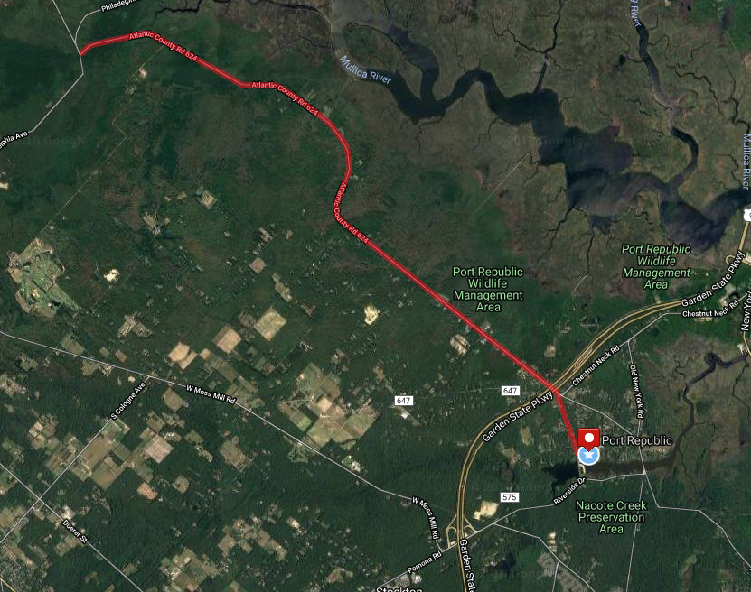
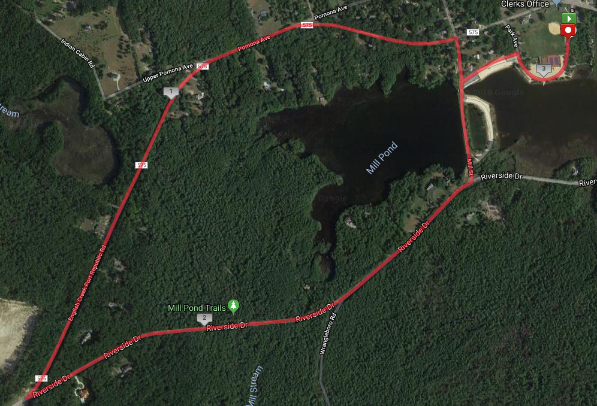

The swim starts and finishes at the Port Republic Beach. The beach area is part of the Mullica River Water Shed and is adjacent to a freshwater spillway. The water is calm and clean with very little current.

Start on Spillway Bridge go down Mill Road to Riverside Drive make a right go approx half mile turn and come back, turn right run across parking lot and beach and join swimmers into transition area

The bike ride is out and back on quiet traffic controlled country roads. The course is fast and flat with several rolling hills.

The run is a loop through historic Port Republic. Runners will be on traffic controlled roads that circle the park area through Port Republic and back, through the beach area. Three water stops.
